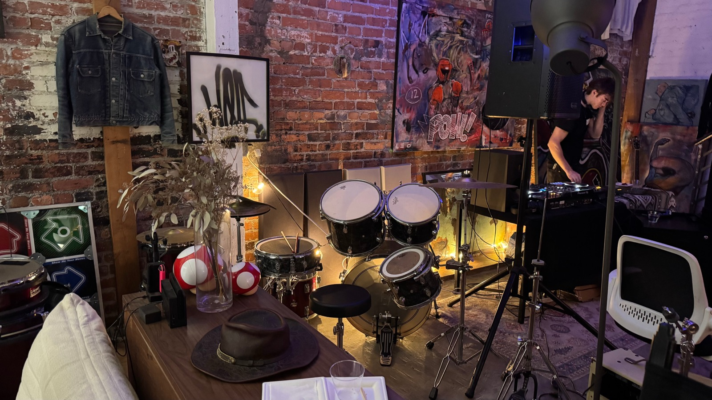
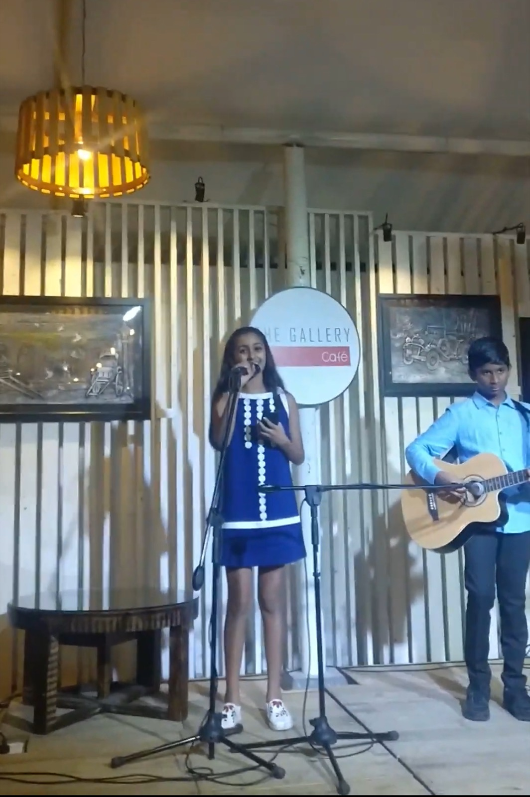
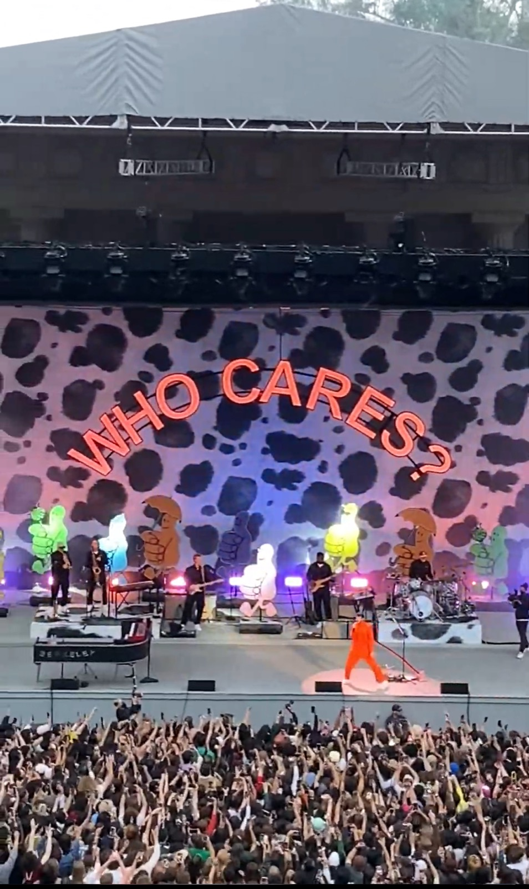

Music and DJing
Indian classical vocals from age 5, drums for 8 years, and I am currently teaching myself to DJ. Also a serious concert person, double digits a year.



Music runs in the family. I grew up around people who take listening seriously, which is probably why I ended up singing Indian classical, playing drums, learning to DJ, and buying more concert tickets than is sensible.